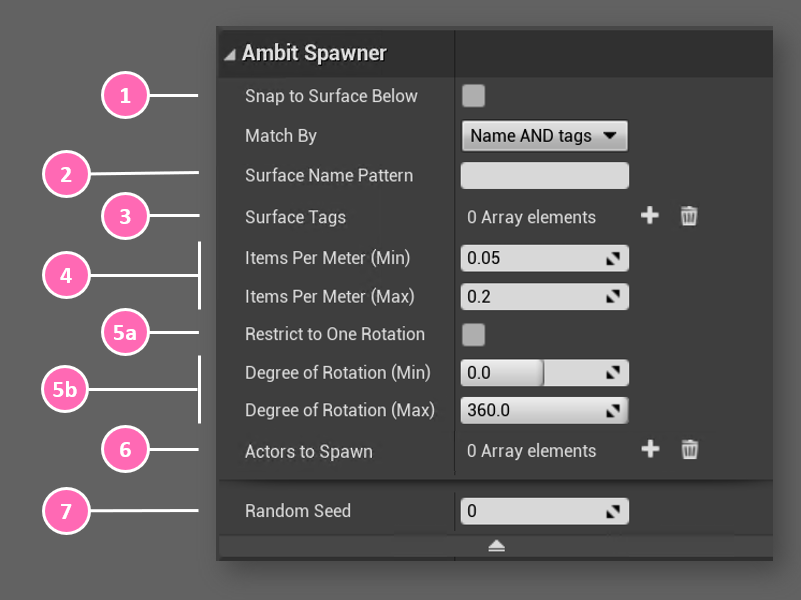
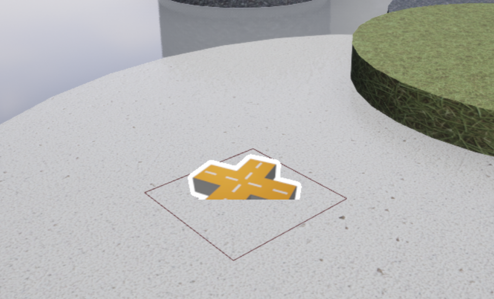

Spawn in Volume Actor¶
The Spawn in Volume actor works by using the position of the actor and the pre-made box component attached to the actor to determine the rectangular area where obstacles will be spawned. If the bounded area contains multiple surface types, you can fine tune the Spawn in Volume's behavior by specifying by
Spawn in Volume will use the

Using Spawn in Volume¶
After adding a Spawn in Volume instance to your map you will see an icon like this. You can place it at any 3D location you'd like. The position of the Spawn in Volume instance is the center of the bounding plane. You can transform the Spawn in Volume instance by rotation, translation, and scaling to adjust the rotation, position, and size of the box component. The box component's dimensions can also be changed in the Shape category of the Details panel.

If you specified surfaces for Spawn in Volume using surface name pattern and/or tags, or if you choose Snap to Surface Below, Spawn in Volume will calculate the appropriate height (Z-axis) for each of the spawned obstacles. If no surfaces are specified and Snap to Surface Below, then AmbitSpawnerBounding will its height for all of the spawned obstacles.
Examples¶
It's easiest to understand the effect of each of the Spawn in Volume parameters by seeing them in action. You will find a variety of examples in the Spawn in Volume Examples section.